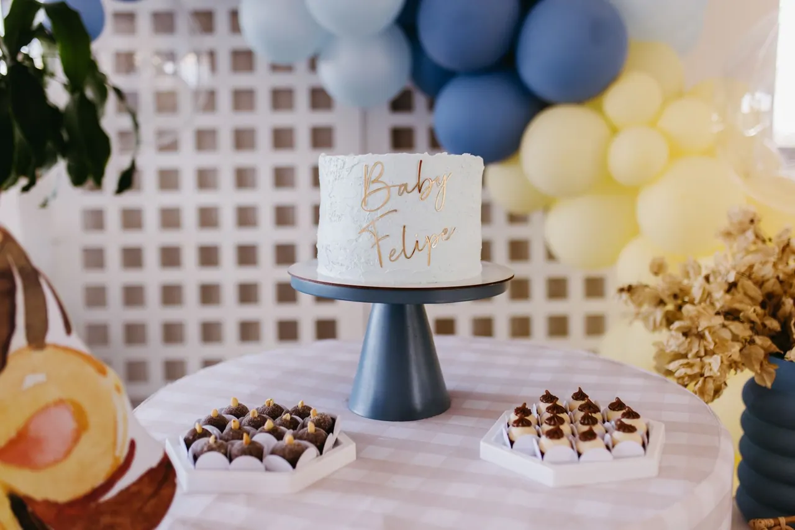

Galactic Dust Sweets · Orlando, FL
Pastel para baby shower en Orlando
Preparamos tu pastel para baby shower en Orlando con los colores, el tema y el tamaño de tu celebración, hecho a mano y por encargo. También puede ser un pastel para revelar si es niño o niña. Escríbenos por WhatsApp con la fecha y la idea, y lo diseñamos contigo.

- Hecho a mano
- Todo personalizado
- Entregas en Orlando y alrededores
- Lunes a sábado, 9:00 a. m. – 6:00 p. m.
¿Cómo puede ser un pastel de baby shower?
Como todo es personalizado, el pastel puede tener el estilo que quieras:
- Tonos suaves de rosa, azul, menta o neutros.
- Temático: ositos, nubes, estrellas, lunas o un cielo nocturno a nuestro estilo cósmico.
- Con el nombre del bebé, si ya lo tienen.
- A juego con la decoración y las invitaciones.
Mándanos fotos de inspiración o la paleta de colores de la fiesta y te proponemos un diseño.
¿Hacen pasteles de revelación de género?
Sí, podemos preparar un pastel para revelar si es niño o niña. Si quieres que solo nosotros sepamos la respuesta, puedes pedirle a la persona de confianza que tiene el resultado que nos escriba directamente. [POR CONFIRMAR: confirmar que se ofrece relleno o interior de color para la revelación]
¿Qué tamaño necesito?
Adaptamos el tamaño a tu número de invitados. Dinos cuántas personas esperas y te recomendamos el tamaño o los pisos. Si quieres completar la mesa de dulces, mira nuestros postres caseros, panes y chocolates.
¿Con cuánta anticipación se pide?
Como referencia, entre 1 y 2 semanas antes del baby shower. Si el diseño es muy elaborado, pídelo con más tiempo. [POR CONFIRMAR: validar tiempo promedio]
Según la celebración, puede pedirse un depósito para apartar la fecha. Aceptamos todos los medios de pago.
¿Llevan el pastel al lugar de la fiesta?
Sí, entregamos en Orlando y alrededores, de lunes a sábado de 9:00 a. m. a 6:00 p. m. Más detalles en entregas y tiempos. Si tienes dudas sobre alergias o pagos, revisa las preguntas frecuentes.
Galería · Trabajos reales
Pasteles de baby shower reales
Fotos de pasteles de baby shower hechos por Galactic Dust Sweets. [POR CONFIRMAR: subir fotos de baby showers descargadas del Instagram]. Ve más en nuestro Instagram.
@galacticdustsweets
Ver InstagramGalactic Dust Sweets
Celebra la llegada del bebé con un pastel único
Envíanos la fecha, el número de invitados y los colores. Te respondemos por WhatsApp.